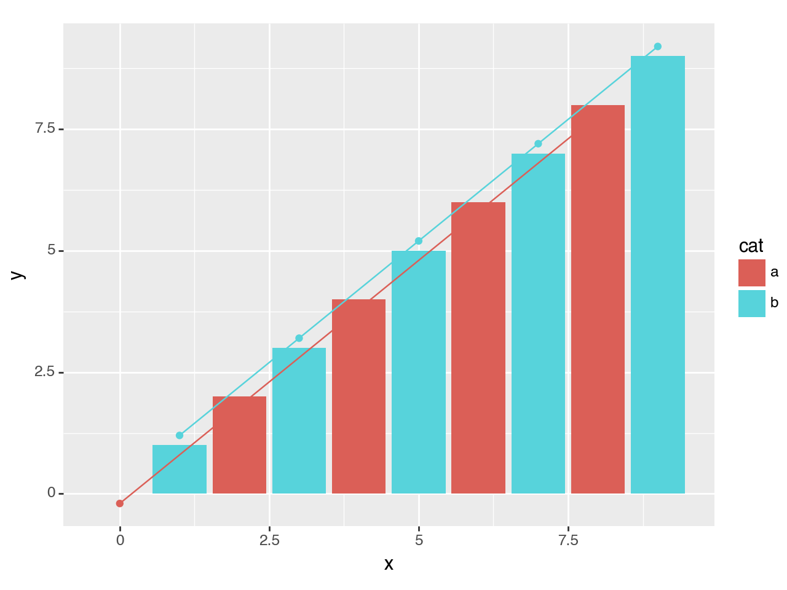
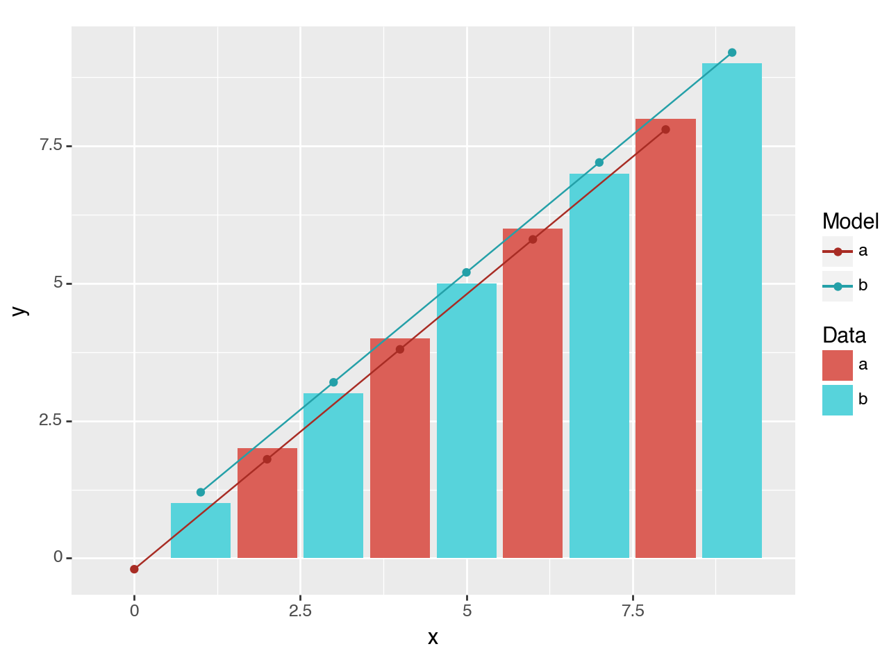

Using slightly altered colors to make a distinction between related data¶
[1]:
import pandas as pd
import numpy as np
from plotnine import (
ggplot,
aes,
geom_col,
geom_path,
geom_point,
geom_col,
scale_color_discrete,
guides,
guide_legend
)
First, we make up some data. The data we create has y for actual data value and yfit for a hypothetical fitted model. It also has a category column cat.
[2]:
n = 10
df = pd.DataFrame({'x': np.arange(n),
'y': np.arange(n),
'yfit': np.arange(n) + np.tile([-.2, .2], n//2),
'cat': ['a', 'b']*(n//2)})
Initial plot
[3]:
(ggplot(df)
+ geom_col(aes('x', 'y', fill='cat'))
+ geom_point(aes('x', y='yfit', color='cat'))
+ geom_path(aes('x', y='yfit', color='cat'))
)

[3]:
<Figure Size: (640 x 480)>
There is a clash of colors between the actual data (the bars) and the fitted model (the points and lines). A simple solution is to adjust the colors of the fitted data slightly. We do that by varying the lightness of the default color scale, make them a little darker.
[4]:
(ggplot(df)
+ geom_col(aes('x', 'y', fill='cat'))
+ geom_point(aes('x', y='yfit', color='cat'))
+ geom_path(aes('x', y='yfit', color='cat'))
+ scale_color_discrete(l=.4) # new
)
[4]:
<Figure Size: (640 x 480)>
There are two main pieces of information in the plot, but we a single combined legend. Since we use separate aesthetics for the actual data and fitted model, we can have distinct legends for both.
We manually define the legend for the fill and color aesthetics, this overrides the automatic legend creation.
[5]:
(ggplot(df)
+ geom_col(aes('x', 'y', fill='cat'))
+ geom_point(aes('x', y='yfit', color='cat'))
+ geom_path(aes('x', y='yfit', color='cat'))
+ scale_color_discrete(l=.4)
+ guides( # new
fill=guide_legend(title='Data'),
color=guide_legend(title='Model'))
)

[5]:
<Figure Size: (640 x 480)>